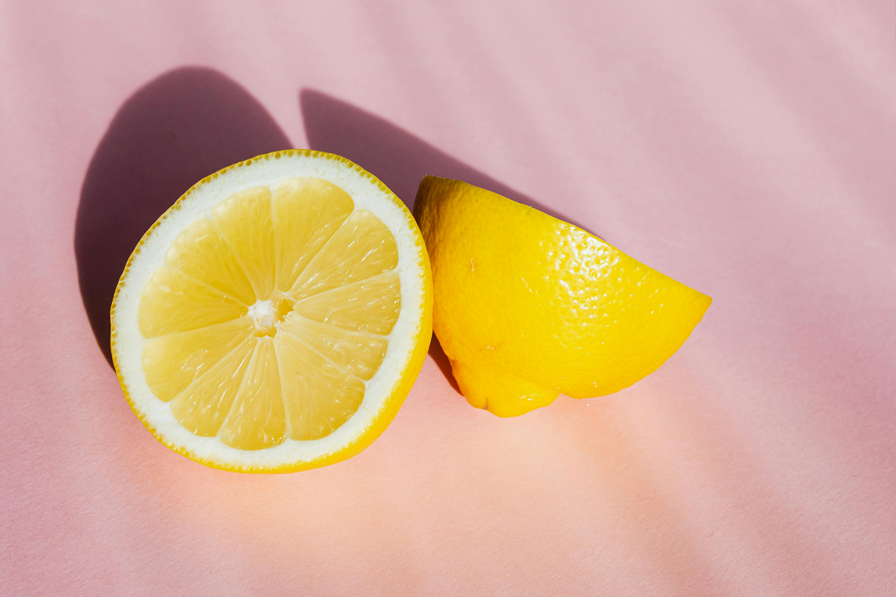
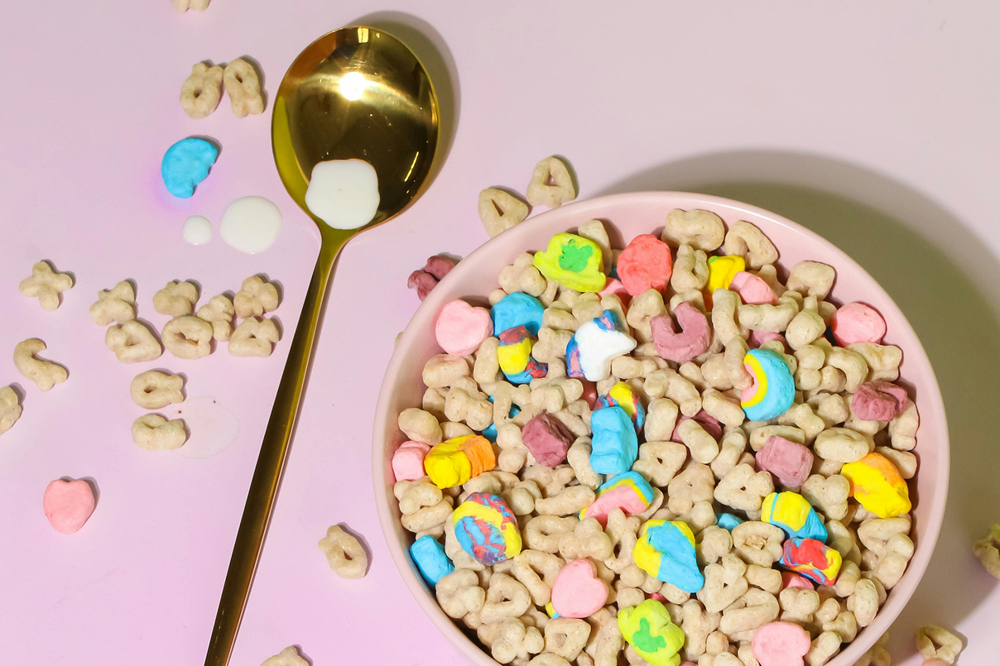
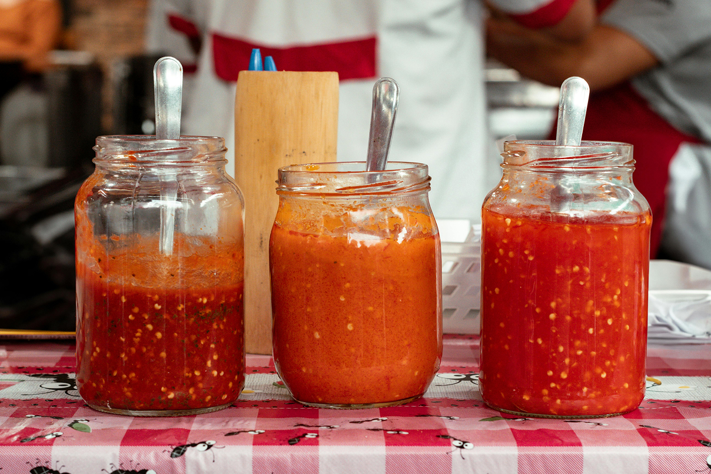

Exploring Ingredients: Fascinating Facts and Manufacturing Insights

Oct 7, 2021
E 300 / Ascorbic Acid
What does ascorbic acid mean? L-Ascorbic acid (C6H8O6) also known as vitamin C is a water-soluble vitamin found in nature.

Jul 30, 2021
Manufacturing Steps of Ready to Eat Cereals
Cereals make the breakfast 'fast'. Ready-to-eat breakfast cereal is widely used due to its taste and easy preparation.

Sep 22, 2021
Production Process of Sweet Chili Sauce
Ingredients: Tomato (peeled, chopped, and seeds removed), a sweetener, vinegar, onion, salt, chili pepper, seasonings.